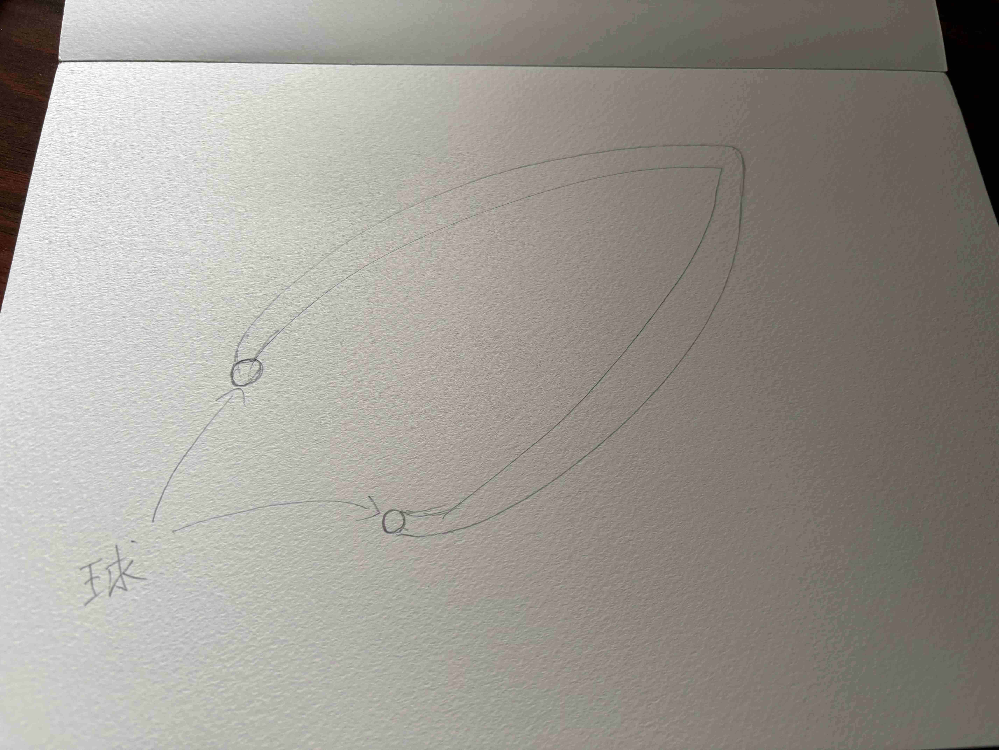
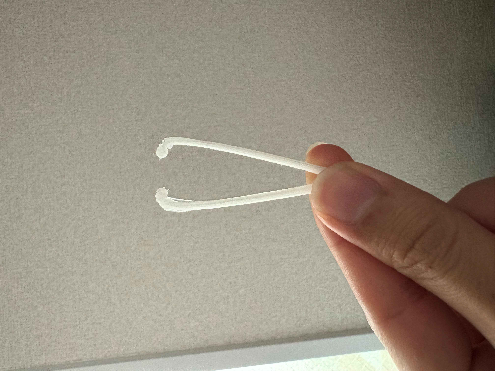
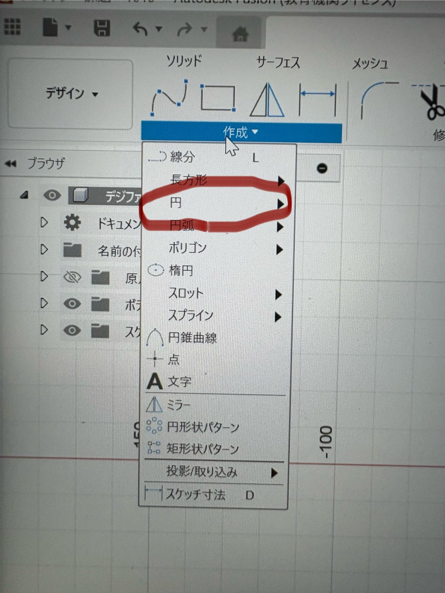
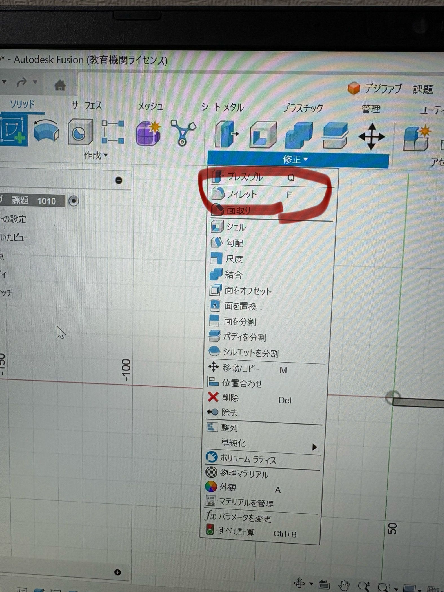

ピンセットを進化
作品名「ソフトタッチピンセット」


設計ファイル
作品の説明
従来のピンセットの先端に球体をつけてみました。
なぜこの作品を作ろうと思ったか
現代のピンセットは鋭利なものが多く傷つけてしまう可能性があるなと感じ、先端に球体をつけてみました。
制作中で学べたこと
ピンセットの先端に球体をつけるのに苦戦していましたがファブラボのスタッフの方に教えてもらい、理想の設計図ができました。
- ピンセットの型を作ります
- スケッチの「円」の項目を選択し好きなサイズ感にします

- 作った円を押し出して円柱にします（この時円の直径と円柱の高さを一緒にします）
- 作った円柱を修正の欄からフィレットを選択し球にします

- ピンセットと作った球を結合してOKです
反省点
慣れないFusionで苦戦してしまったため、普段からものづくりの視点や考えを持ってFusionに触れていきたいなと感じることができました